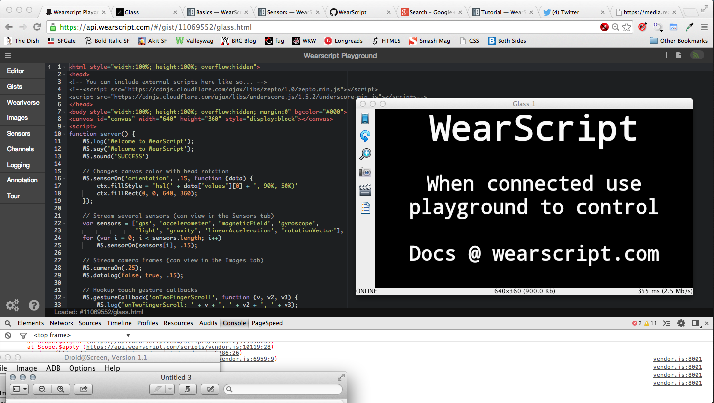

Mechanical, inflammable, insufferable.
Home
Boing
Synesthesia
Marmot Creek
The Glass Banana
LASER
Travels
For the AngelHack SF hackathon on May 10-11, 2014, I joined the Explorers and began to investigate what was possible with Google Glass, WearScript (Github or Docs), and a good old-fashioned sharkbanana. The WearScript API gives developers access to all the sensors: light, accelerometer, eye motion, and so on, but most excitingly it can execute behavior based on iBeacon location detection. This last one will be *huge* for anyone interested in contextual computing, social interaction awareness, and behavioral notifications.
On the technical side, Glass released XE17 literally yesterday but it is still ultimately based on Android 4.4 (KitKat) so I wouldn't expect compatibility issues if you haven't upgraded yet. In debug mode, you can run unapproved apps over a USB connection, so I used the browser IDE and kept the console open instead of using the more traditional Android SDK with Eclipse and Java. For device emulation and screen capturing I like Droid@screen, which is a .jar file so you do need XCode as well.
WearScript is a JavaScript implementation of the Mirror API and is part of the OpenShades project. It is also the most gleeful fun I have had developing for a hardware device in a while, chortling merrily as my Glass went 'spling!' on command:
WS.sound('SUCCESS');
Initially I thought my Glass just had terrible battery life but I later realized that it was just having overheating issues because I was driving it so hard, haha. I also laughed out loud with delight when I successfully executed the first Gist in the demo docs, which only changes the display color with orientation. The display output and the entire code snippet for the script tag within glass.html is below.
WS.sensorOn('orientation', .15, function (data) {
ctx.fillStyle = 'hsl(' + data['values'][0] + ', 90%, 50%)'
ctx.fillRect(0, 0, 640, 360);
});
function main() {
if (WS.scriptVersion(1)) return;
ctx = document.getElementById('canvas').getContext("2d");
WS.serverConnect('{{WSUrl}}', server);
}
window.onload = main;
The fundamental Glass UI is a timeline layout that allows swiping forwards and backwards, and each card or menu in the timeline can act as the root of a tree. The inherently hierarchical nature of the trees is more intuitive than older Android versions (<4.0) where descending in to each menu of a sub-tree required a substantial amount of unavoidable boilerplate. For Glass and WearScript, it is an opportunity to show off gesture recognition and to bind functions to OnTouchCountChange() or similar events.
My own actual nano-app is devastatingly simplistic but nonetheless demonstrates speech-based user input, asset and process management, and other wildly impressive things.
I'm looking forward to the future ;)
Tweet this post!